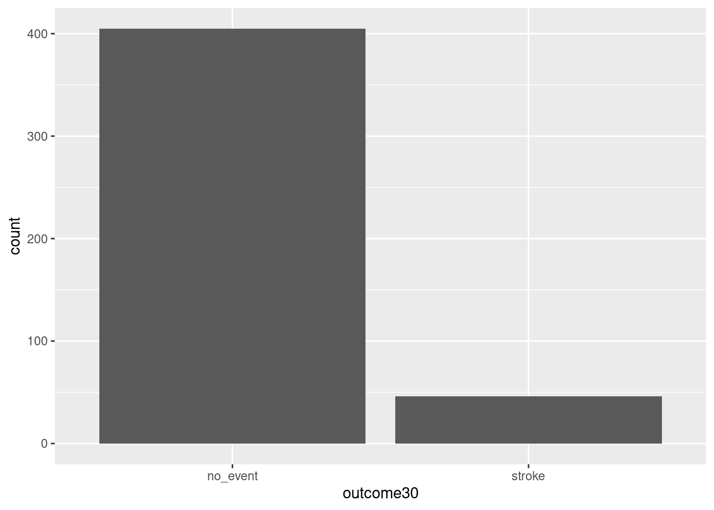

library(tidyverse)
library(mosaic)1 Data Case Study
1.1 Objectives
Use
Rfor basic analysis and visualization.Compile a pdf file report from a RMD or qmd file in R.
1.2 Introduction to descriptive statistical modeling
In this first block of material, we will focus on data types, collection methods, summaries, and visualizations. We also intend to introduce computing via the R package. Programming in R requires some focus early in this book and we will supplement with some online courses. There is relatively little mathematics in this first block.
1.3 The data analytic process
Scientists seek to answer questions using rigorous methods and careful observations. These observations – collected from the likes of field notes, surveys, and experiments – form the backbone of a statistical investigation and are called data. Statistics is the study of how best to collect, analyze, and draw conclusions from data. It is helpful to put statistics in the context of a general process of investigation:
Identify a question or problem.
Collect relevant data on the topic.
Explore and understand the data.
Analyze the data.
Form a conclusion.
Make decisions based on the conclusion.
This is typical of an explanatory process because it starts with a research question and proceeds. However, sometimes an analysis is exploratory in nature. There is data but not necessarily a research question. The purpose of the analysis is to find interesting features in the data and sometimes generate hypotheses. In this book, we focus on the explanatory aspects of analysis.
Statistics as a subject focuses on making stages 2-5 objective, rigorous, and efficient. That is, statistics has three primary components:
- How best can we collect data?
- How should it be analyzed?
- And what can we infer from the analysis?
The topics scientists investigate are as diverse as the questions they ask. However, many of these investigations can be addressed with a small number of data collection techniques, analytic tools, and fundamental concepts in statistical inference. This chapter provides a glimpse into these and other themes we will encounter throughout the rest of the book.
1.4 Case study
In this chapter, we will consider an experiment that studies effectiveness of stents in treating patients at risk of stroke. 1 2 Stents are small mesh tubes that are placed inside narrow or weak arteries to assist in patient recovery after cardiac events and reduce the risk of an additional heart attack or death. Many doctors have hoped that there would be similar benefits for patients at risk of stroke. We start by writing the principal question the researchers hope to answer:
1.4.1 Research question
Does the use of stents reduce the risk of stroke?
1.4.2 Collect the relevant data
The researchers who asked this question collected data on 451 at-risk patients. Each volunteer patient was randomly assigned to one of two groups:
Treatment group. Patients in the treatment group received a stent and medical management. The medical management included medications, management of risk factors, and help in lifestyle modification.
Control group. Patients in the control group received the same medical management as the treatment group but did not receive stents.
Researchers randomly assigned 224 patients to the treatment group and 227 to the control group. In this study, the control group provides a reference point against which we can measure the medical impact of stents in the treatment group.
This is an experiment and not an observational study. We will learn more about these ideas in this block.
Researchers studied the effect of stents at two time points: 30 days after enrollment and 365 days after enrollment.
1.4.3 Import data
We begin our first use of R.
If you need to install a package, most likely it will be on CRAN, the Comprehensive R Archive Network. Before a package can be used, it must be installed on the computer (once per computer or account) and loaded into a session (once per R session). When you exit R, the package stays installed on the computer but will not be reloaded when R is started again.
In summary, R has packages that can be downloaded and installed from online repositories such as CRAN. When you install a package, which only needs to be done once per computer or account, in R all it is doing is placing the source code in a library folder designated during the installation of R. Packages are typically collections of functions and variables that are specific to a certain task or subject matter.
For example, to install the mosaic package, enter:
install.packages("mosaic") # fetch package from CRANIn RStudio, there is a Packages tab that makes it easy to add and maintain packages.
To use a package in a session, we must load it. This makes it available to the current session only. When you start R again, you will have to load packages again. The command library() with the package name supplied as the argument is all that is needed. For this session, we will load tidyverse and mosaic. Note: the box below is executing the R commands, this is known as reproducible research since you can see the code and then you can run or modify as you need.
Next read in the data into the working environment.
# This code reads the `stent_study.csv` file into the `stent_study` object.
stent_study <- read_csv("data/stent_study.csv")Note on commenting code: It is good practice to comment code. Here are some of the best practices for commenting computer code:
Comments should explain why code is written the way it is, rather than explaining what the code does. This means that you should explain the intent of the code, not just the steps that it takes to achieve that intent.
Comments should be brief and to the point. There is no need to write long, rambling comments. Just write enough to explain what the code is doing and why.
Comments should be clear and concise. Use plain language that is easy to understand. Avoid jargon and technical terms that the reader may not be familiar with.
Comments should be consistent with the style of the code. If the code is written in a formal style, then the comments should also be formal. If the code is written in a more informal style, then the comments should be informal.
Comments should be up-to-date. If you make changes to the code, then you should also update the comments to reflect those changes.
In additional, consider the following practices in writing your code:
Using a consistent comment style. This will make it easier for other people to read and understand your code.
Using meaningful names for variables and functions. This will help to reduce the need for comments.
Use indentation and whitespace to make your code easier to read. This will also help to reduce the need for comments.
Document your code. This means writing a separate document that explains the purpose of the code, how to use it, and any known limitations.
By following these best practices, you can write code that is easy to understand and maintain. This will make your code more reusable and will help to prevent errors.
Now back to our code. Let’s break this code down. We are reading from a .csv file and assigning the results into an object called stent_study. The assignment arrow <- means we assign what is on the right to what is on the left. The R function we use in this case is read_csv(). When using R functions, you should ask yourself:
What do I want
Rto do?What information must I provide for
Rto do this?
We want R to read in a .csv file. We can get help on this function by typing ?read_csv or help(read_csv) at the prompt. The only required input to read_csv() is the file location. We have our data stored in a folder called “data” under the working directory. We can determine the working directory by typing getwd() at the prompt.
getwd()Similarly, if we wish to change the working directory, we can do so by using the setwd() function:
setwd('C:/Users/Brianna.Hitt/Documents/ProbStat/Another Folder')In R if you use the view(), you will see the data in what looks like a standard spreadsheet.
View(stent_study)1.4.4 Explore data
Before we attempt to answer the research question, let’s look at the data. We want R to print out the first 10 rows of the data. The appropriate function is head() and it needs the data object. By default, R will output the first 6 rows. By using the n = argument, we can specify how many rows we want to view.
head(stent_study, n = 10)# A tibble: 10 × 3
group outcome30 outcome365
<chr> <chr> <chr>
1 control no_event no_event
2 trmt no_event no_event
3 control no_event no_event
4 trmt no_event no_event
5 trmt no_event no_event
6 control no_event no_event
7 trmt no_event no_event
8 control no_event no_event
9 control no_event no_event
10 control no_event no_event We also want to “inspect” the data. The function is inspect() and R needs the data object stent_study.
inspect(stent_study)
categorical variables:
name class levels n missing
1 group character 2 451 0
2 outcome30 character 2 451 0
3 outcome365 character 2 451 0
distribution
1 control (50.3%), trmt (49.7%)
2 no_event (89.8%), stroke (10.2%)
3 no_event (83.8%), stroke (16.2%) To keep things simple, we will only look at the outcome30 variable in this case study. We will summarize the data in a table. Later in the book, we will learn to do this using the tidy package; for now we use the mosaic package. This package makes use of the modeling formula that you will use extensively later in this book. The modeling formula is also used in Math 378.
We want to summarize the data by making a table. From mosaic, we use the tally() function. Before using this function, we have to understand the basic formula notation that mosaic uses. The basic format is:
goal(y ~ x, data = MyData, ...) # pseudo-code for the formula templateWe read y ~ x as “y tilde x” and interpret it in the equivalent forms: “y broken down by x”; “y modeled by x”; “y explained by x”; “y depends on x”; or “y accounted for by x.” For graphics, it’s reasonable to read the formula as “y vs. x”, which is exactly the convention used for coordinate axes.
For this exercise, we want to apply tally() to the variables group and outcome30. In this case it does not matter which we call y and x; however, it is more natural to think of outcome30 as a dependent variable.
tally(outcome30 ~ group, data = stent_study, margins = TRUE) group
outcome30 control trmt
no_event 214 191
stroke 13 33
Total 227 224The margins option totals the columns.
Of the 224 patients in the treatment group, 33 had a stroke by the end of the first month. Using these two numbers, we can use R to compute the proportion of patients in the treatment group who had a stroke by the end of their first month.
33 / (33 + 191)[1] 0.1473214Exercise:
What proportion of the control group had a stroke in the first 30 days of the study? And why is this proportion different from the proportion reported byinspect()?
Let’s have R calculate proportions for us. Use ? or help() to look at the help menu for tally(). Note that one of the option arguments of the tally() function is format =. Setting this equal to proportion will output the proportions instead of the counts.
tally(outcome30 ~ group, data = stent_study, format = 'proportion', margins = TRUE) group
outcome30 control trmt
no_event 0.94273128 0.85267857
stroke 0.05726872 0.14732143
Total 1.00000000 1.00000000We can compute summary statistics from the table. A summary statistic is a single number summarizing a large amount of data.3 For instance, the primary results of the study after 1 month could be described by two summary statistics: the proportion of people who had a stroke in the treatment group and the proportion of people who had a stroke in the control group.
Proportion who had a stroke in the treatment (stent) group: \(33/224 = 0.15 = 15\%\)
Proportion who had a stroke in the control group: \(13/227 = 0.06 = 6\%\)
1.4.5 Visualize the data
It is often important to visualize the data. The table is a type of visualization, but in this section we will introduce a graphical method called bar charts.
We will use the ggformula package to visualize the data. It is a wrapper to the ggplot2 package which is becoming the industry standard for generating professional graphics. However, the interface for ggplot2 can be difficult to learn and we will ease into it by using ggformula, which makes use of the formula notation introduced above. The ggformula package was loaded when we loaded mosaic.4
To generate a basic graphic, we need to ask ourselves what information we are trying to see, what particular type of graph is best, what corresponding R function to use, and what information that R function needs in order to build a plot. For categorical data, we want a bar chart and the R function gf_bar() needs the data object and the variable(s) of interest.
Here is our first attempt. In Figure 1.1, we leave the y portion of our formula blank. Doing this implies that we simply want to view the number/count of outcome30 by type. We will see the two levels of outcome30 on the x-axis and counts on the y-axis.
(ref:ggfbold) Using ggformula to create a bar chart.
gf_bar(~outcome30, data = stent_study)

Exercise:
Explain Figure 1.1.
This plot graphically shows us the total number of “stroke” and the total number of “no_event”. However, this is not what we want. We want to compare the 30-day outcomes for both treatment groups. So, we need to break the data into different groups based on treatment type. In the formula notation, we now update it to the form:
goal(y ~ x|z, data = MyData, ...) # pseudo-code for the formula templateWe read y ~ x|z as “y tilde x by z” and interpret it in the equivalent forms: “y modeled by x for each z”; “y explained by x within each z”; or “y accounted for by x within z.” For graphics, it’s reasonable to read the formula as “y vs. x for each z”. Figure Figure 1.2 shows the results.
gf_bar(~outcome30|group, data = stent_study) group variable.
1.4.5.1 More advanced graphics
As a prelude for things to come, the above graphic needs work. The labels don’t help and there is no title. We could add color. Does it make more sense to use proportions? Here is the code and results for a better graph, see Figure Figure 1.3. Don’t worry if this seems a bit advanced, but feel free to examine each new component of this code.
# This code creates a graph showing the impact of stents on stroke.
# The `gf_props()` function creates a bar graph showing the number of events
# for each experimental group. The `fill` argument specifies the fill color
# for each group. The `position = 'fill'` argument specifies that the bars
# should be filled to the top.
# The `gf_labs()` function adds the title, subtitle, x-axis label, and y-axis
# label to the graph.
# The `gf_theme()` function applies a black-and-white theme to the graph.
stent_study %>%
gf_props(~group, fill = ~outcome30, position = 'fill') %>%
gf_labs(title = "Impact of Stents of Stroke",
subtitle = 'Experiment with 451 Patients',
x = "Experimental Group",
y = "Number of Events") %>%
gf_theme(theme_bw())Notice that we used the pipe operator, %>%. This operator allows us to string functions together in a manner that makes it easier to read the code. In the above code, we are sending the data object stent_study into the function gf_props() to use as data, so we don’t need the data = argument. In math, this is a composition of functions. Instead of f(g(x)) we could use a pipe f(g(x)) = g(x) %>% f().
1.4.6 Conclusion
These two summary statistics (the proportions of people who had a stroke) are useful in looking for differences in the groups, and we are in for a surprise: an additional 9% of patients in the treatment group had a stroke! This is important for two reasons. First, it is contrary to what doctors expected, which was that stents would reduce the rate of strokes. Second, it leads to a statistical question: do the data show a real difference due to the treatment?
This second question is subtle. Suppose you flip a coin 100 times. While the chance a coin lands heads in any given coin flip is 50%, we probably won’t observe exactly 50 heads. This type of fluctuation is part of almost any type of data generating process. It is possible that the 9% difference in the stent study is due to this natural variation. However, the larger the difference we observe (for a particular sample size), the less believable it is that the difference is due to chance. So what we are really asking is the following: is the difference so large that we should reject the notion that it was due to chance?
This is a preview of step 4, analyze the data, and step 5, form a conclusion, of the analysis cycle. While we haven’t yet covered statistical tools to fully address these steps, we can comprehend the conclusions of the published analysis: there was compelling evidence of harm by stents in this study of stroke patients.
Be careful: Do not generalize the results of this study to all patients and all stents. This study looked at patients with very specific characteristics who volunteered to be a part of this study and who may not be representative of all stroke patients. In addition, there are many types of stents and this study only considered the self-expanding Wingspan stent (Boston Scientific). However, this study does leave us with an important lesson: we should keep our eyes open for surprises.
Chimowitz MI, Lynn MJ, Derdeyn CP, et al. 2011. Stenting versus Aggressive Medical Therapy for Intracranial Arterial Stenosis. New England Journal of Medicine 365:993-1003.↩︎
NY Times article reporting on the study: http://www.nytimes.com/2011/09/08/health/research/08stent.html↩︎
Formally, a summary statistic is a value computed from the data. Some summary statistics are more useful than others.↩︎
https://cran.r-project.org/web/packages/ggformula/vignettes/ggformula-blog.html↩︎